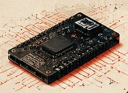
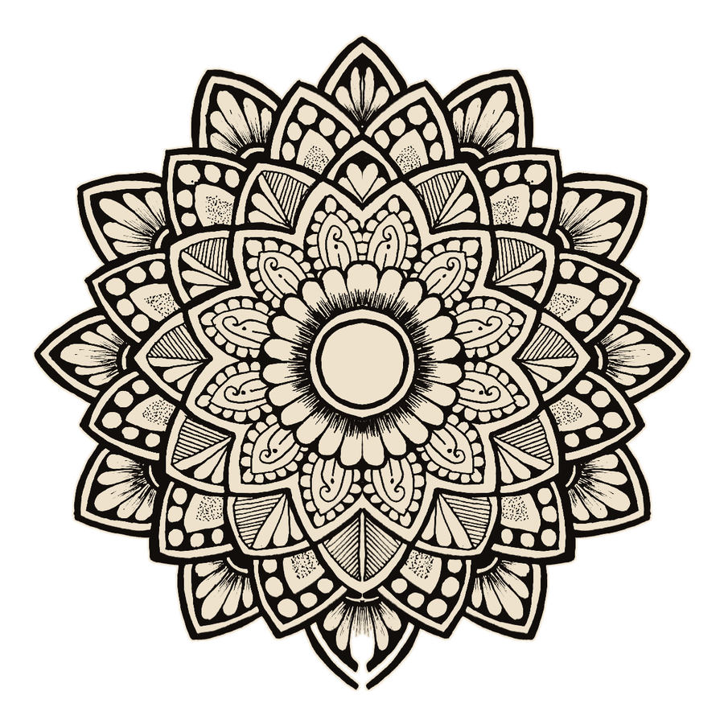
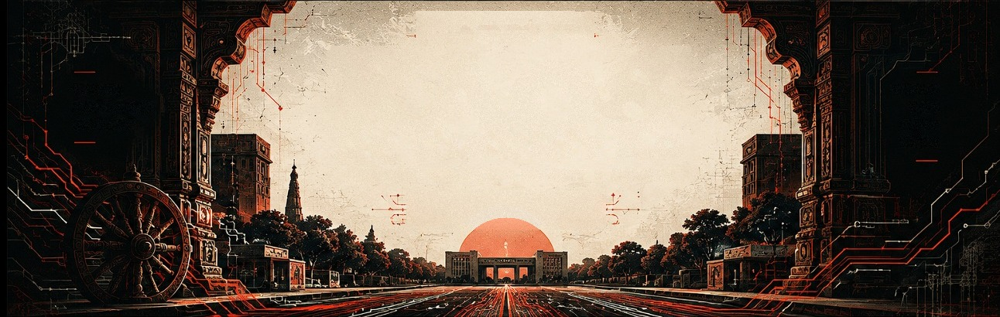
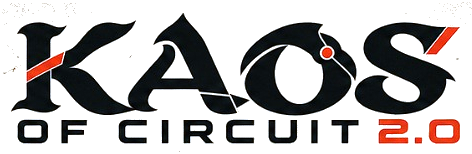
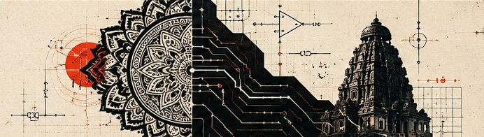
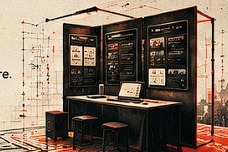

DAY 1
Engineering
Challenge
Solve. Build. Compete.
→




KAOS of Circuit 2.0 is the flagship technical event of KIIT Electrical Society, bringing together brilliant minds to solve real-world challenges, showcase innovative projects and celebrate the spirit of engineering.
KNOW MORE →
Solve. Build. Compete.
→
Innovate. Showcase. Inspire.
→Cash Prizes and more.
→